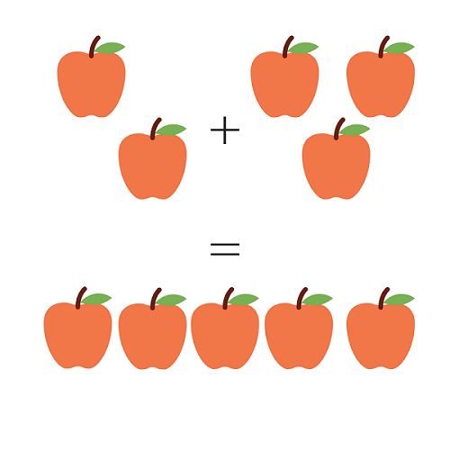

Quick Math
Addition Tutorial
The addition of two numbers results in the combined amount of those numbers. For example, pretend you have 2 apples, but you want to have 5 apples in total. Count how many apples you will need to get from 2 to 5. You will need 3 more apples to have a total of 5 apples. Therefore, 2 apples plus 3 apples, equals 5 apples.
Addition is written using the plus sign, "+", to indicate one number being added to another. For example,
- Like the example on the right, 2 apples + 3 apples = 5 apples reads as, 2 apples plus 3 apples equals 5 apples.
- 1 + 1 = 2 reads, one plus one equals two
- 1 + 2 = 3 reads, one plus two equals three
